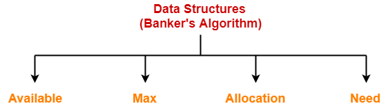
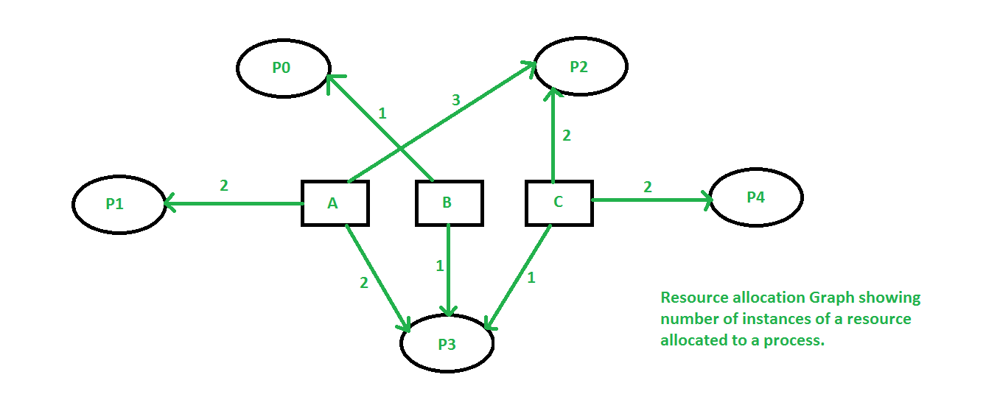
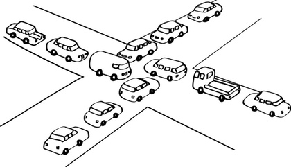
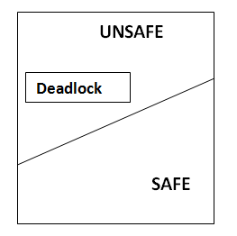

Banker's algorithm


Banker's Algorithm is a resource allocation and deadlock avoidance algorithm that tests for safety by simulating the allocation of predetermined maximum possible amounts of all resources, and then makes an "safe-state" check to test for possible deadlock conditions for all other pending activities, before deciding whether allocation should be allowed to continue.
The algorithm was developed in the design process for the the operating system. When a new process enters a system, it must declare the maximum number of instances of each resource type that it may ever claim; clearly, that number may not exceed the total number of resources in the system. Also, when a process gets all its requested resources it must return them in a finite amount of time.
Resources may be allocated to a process only if the amount of resources requested is less than or equal to the amount available; otherwise, the process waits until resources are available. The Banker's Algorithm derives its name from the fact that this algorithm could be used in a banking system to ensure that the bank does not run out of resources, because the bank would never allocate its money in such a way that it can no longer satisfy the needs of all its customers. By using the Banker's algorithm, the bank ensures that when customers request money the bank never leaves a safe state. If the customer's request does not cause the bank to leave a safe state, the cash will be allocated, otherwise the customer must wait until some other customer deposits enough
Resources
For the Banker's algorithm to work, it needs to know three things:
- How much of each resource each process could possibly request[MAX]
- How much of each resource each process is currently holding[ALLOCATED]
- How much of each resource the system currently has available[AVAILABLE]
Safe and Unsafe States

A state is considered safe if it is possible for all processes to finish executing (terminate). Since the system cannot know when a process will terminate, or how many resources it will have requested by then, the system assumes that all processes will eventually attempt to acquire their stated maximum resources and terminate soon afterward. This is a reasonable assumption in most cases since the system is not particularly concerned with how long each process runs (at least not from a deadlock avoidance perspective). Also, if a process terminates without acquiring its maximum resource it only makes it easier on the system. A safe state is considered to be the decision maker if it's going to process ready queue.
Given that assumption, the algorithm determines if a state is safe by trying to find a hypothetical set of requests by the processes that would allow each to acquire its maximum resources and then terminate (returning its resources to the system). Any state where no such set exists is an unsafe state.